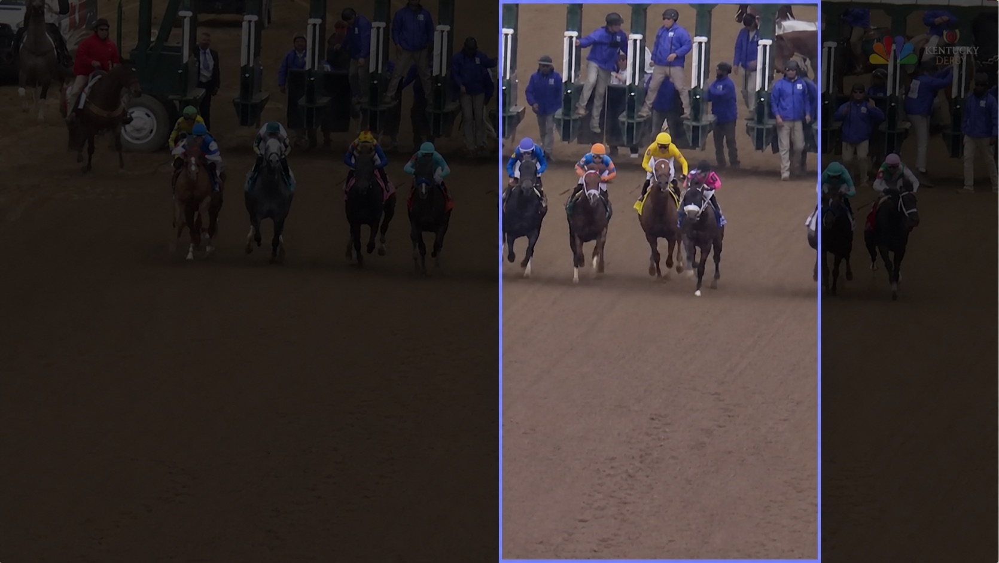

Editorial reasoning
What belongs in the storyFind the moments that satisfy a creative brief.
A multimodal computer vision system for story-aware vertical video.
Find the moments that satisfy a creative brief.
Choose the subject and compose a stable 9:16 view.
A 9:16 crop keeps less than one-third of a 16:9 frame’s width.

The narrower the canvas, the more intentional every decision must be.
First decide what matters. Then decide how it should be shown.
Ground what matters. Track it through time. Compose around it.
Simple shots take the deterministic path; complexity is reserved for motion.
The system must observe, judge, and refine—across motion, composition, and story.
Evaluation turns subjective quality into a repairable signal.
Read motion, composition, and story together.
Name the failure: subject, framing, or temporal stability.
Turn each verdict into the next repair—not just a score.
A good edit is coherent, readable, stable, and intentional.
The work strengthened five capabilities I now bring to production AI systems.